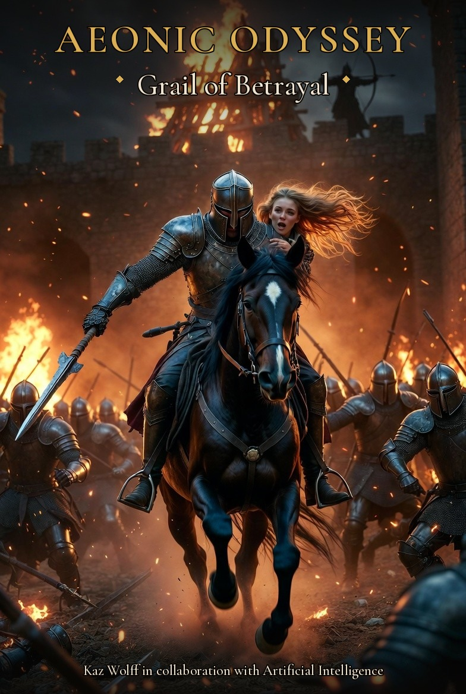
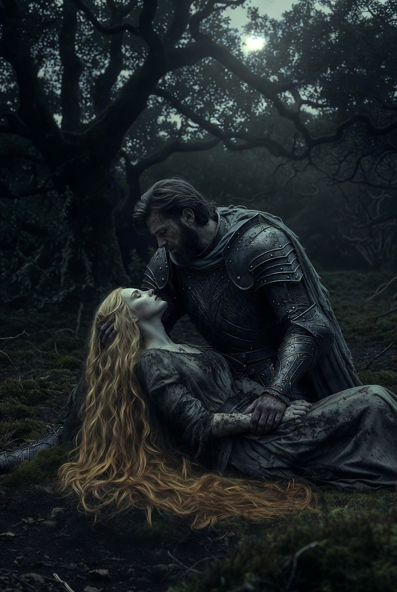

01
A living bible
When models learned to read documents, I stopped pasting lore into every chat. Book2Data holds voice, canon, and a grade for each session.

Human–AI collaboration · Book II
I spent six years writing Aeonic Odyssey: Grail of Betrayal with AI as a partner — Copilot, Grok, retrieval, then agents. This site is the method. The book is what the method produced.
Kaz Wolff · @IamTheKaz
Why this exists
“People need to learn to grow with AI rather than having it think for them. It's funny everyone is afraid of AI controlling us but then expect AI to do all of our thinking. AI is a tool not a replacement.”
Kaz Wolff, 2026
01
When models learned to read documents, I stopped pasting lore into every chat. Book2Data holds voice, canon, and a grade for each session.
02
File reading 4/10. Session over. Moved to Copilot. If you will not grade the tool, you are not collaborating. You are hoping.
03
Six books. Four souls. Book II wears Camelot. I am not posting the manuscript here. You can buy it. You can steal the method for free.
A page from the book
The clashing of steel and the agonized cries of fallen knights echoed through the night as Lancelot urged his horse through the chaos engulfing Camelot. Smoke billowed from burning towers, casting an eerie glow over the crumbling walls. Behind him, Guinevere clung tightly, her golden hair whipping wildly in the turbulent wind as they fled the destruction.
Lancelot glanced down at the sword in his hand. Though he had only used it in this battle, it was now broken and useless. Lady Cailin was right. Excalibur is Fang, and he had her in his hands.
In a small clearing he caught her before she hit the earth. “Adel?” he murmured, using the name he had known her by for centuries.
“Jack,” she whispered. “You may have taken me from Camelot, but Zahilla has won. Now he has Fang, and he has me.”
